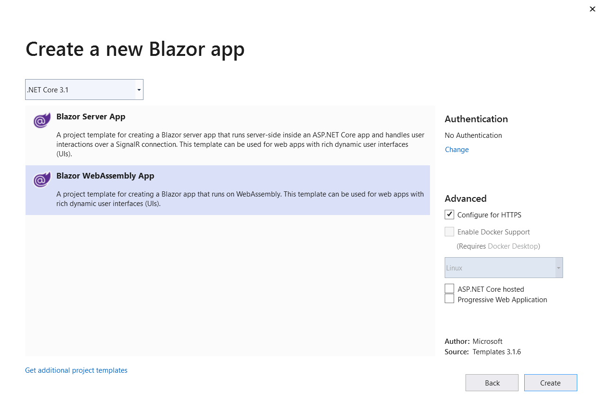

2020-06-16
看到最近發佈的 Blazor WebAssembly, 對開發者來講, 可以在比較好的平台來處理傳統的JavaScript, 底層的技術不是一般應用開發人員在短期間內容易全盤理解, 然而, 一些概念性的說明, 驗証看得到的代碼是鼓勵參與的.




----------------------------------------------- Ref: https://www.theurlist.com/aspnet-community-standup-2020-03-31
https://channel9.msdn.com/events/Build/2020/BOD104?term=blazor&sortBy=recent&pubDate=year&lang-en=true